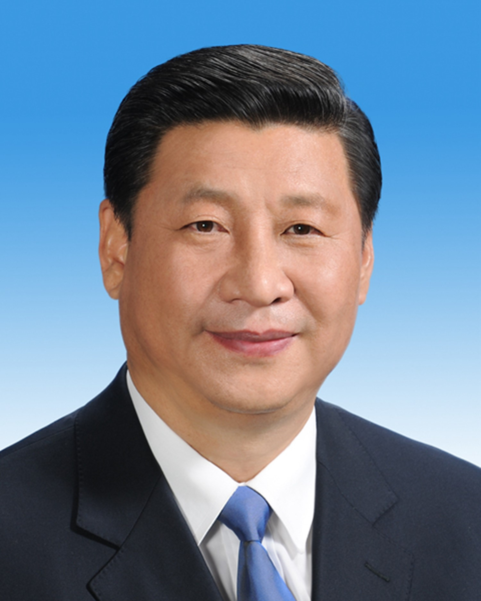

毛泽东
1949至1976年，毛泽东担任中华人民共和国最高领导人。他对马克思列宁主义的发展、军事理论的贡献以及对共产党的理论贡献被称为毛泽东思想。因毛泽东担任过的主要职务几乎全部称为主席，所以也被人们尊称为“毛主席”。 毛泽东被视为现代世界历史中最重要的人物之一，《时代》杂志也将他评为20世纪最具影响100人之一。
了解更多
江泽民
江泽民同志是党的第三代中央领导集体的核心，是“三个代表”重要思想的主要创立者。他目光远大、审时度势，总是从中国和世界发展大势、从党和国家工作全局出发观察和思考问题，不断推进理论创新和其他各方面的创新； 坚持中国特色社会主义共同信念和共产主义远大理想，坚持理论联系实际，坚持全心全意为人民服务，为党和人民持之以恒地去学习、去工作、去奋斗。
了解更多胡锦涛
科学发展观是坚持以人为本，全面、协调、可持续的发展观，促进经济社会协调发展和人的全面发展。 以人为本，就是要把人民的利益作为一切工作的出发点和落脚点，不断满足人们的多方面需求和促进人的全面发展；全面，就是要在不断完善社会主义市场经济体制，保持经济持续快速协调健康发展的同时，加快政治文明、精神文明的建设，形成物质文明、政治文明、精神文明相互促进、共同发展的格局；
了解更多

习近平
2013年秋，习近平总书记西行哈萨克斯坦、南下印度尼西亚，先后提出建设丝绸之路经济带和21世纪海上丝绸之路重大倡议。8年来，在以习近平同志为核心的党中央坚强领导下，我们统筹谋划推动高质量发展、构建新发展格局和共建“一带一路”，坚持共商共建共享原则，把基础设施“硬联通”作为重要方向，把规则标准“软联通”作为重要支撑，把同共建国家人民“心联通”作为重要基础，推动共建“一带一路”高质量发展，取得实打实、沉甸甸的成就。
了解更多介绍
中华人民共和国全国人民代表大会会议主席团主持中华人民共和国全国人民代表大会会议。大会主席团的名单草案由全国人民代表大会常务委员会在全国人民代表大会会议举行前提出，经各代表团审议后，提请全国人大预备会议选举产生。
了解一下产生程序
中华人民共和国全国人民代表大会会议主席团主持全国人民代表大会会议。大会主席团的名单草案由全国人大常委会在全国人民代表大会会议举行前提出，经各代表团审议后，提请全国人大预备会议选举产生。
大会主席团产生后，由主席团第一次会议推选主席团常务主席若干人，负责召集会议，并推选主席团成员中的若干人分别担任每次全体会议的执行主席。
组成成员
中华人民共和国全国人民代表大会会议主席团的成员必须是当届全国人民代表大会的代表，涵盖各方面人士。
如九届全国人大第一次会议主席团成员有177人，其中，党和国家领导人32人；各民主党派中央负责人、全国工商联负责人和无党派爱国人士13人；中央党、政、军机关和人民团体有关负责人37人；香港特别行政区、澳门特别行政区、国家支柱产业、科技、社会科学、教育、文艺、体育、卫生、宗教、归侨的代表以及工人、农民、解放军代表、武警部队的代表43人；人口较多的少数民族代表18人；各省、自治区、直辖市以及香港特别行政区代表团的召集人34人。